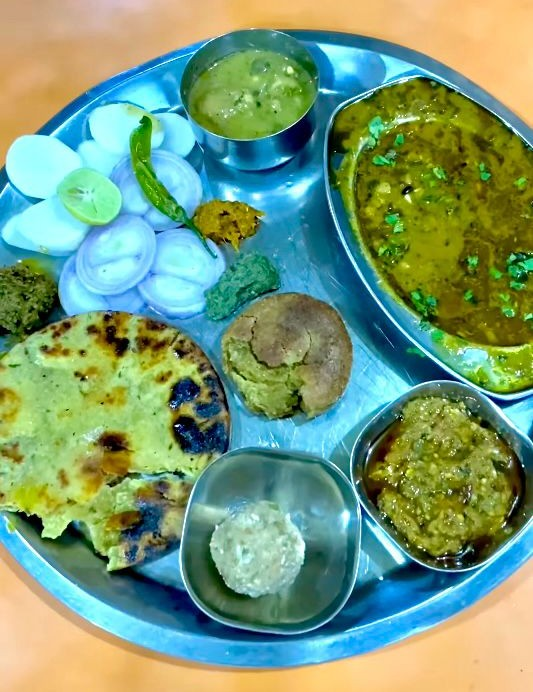

Our Top Dishes
Daal Bati

Dal Bati is a traditional Rajasthani dish consisting of lentils (dal) cooked with aromatic spices and served with bati, which are round, baked wheat flour dumplings. The bati is typically crispy on the outside and soft on the inside, often soaked in ghee for a rich flavor. Served with a side of churma, a sweet dish made from crushed wheat, sugar, and ghee, Dal Bati offers a perfect blend of savory and sweet, making it a hearty and iconic meal of Rajasthan.
Daal Bafle

Dal Bafle is a traditional dish from Madhya Pradesh, similar to Rajasthan's Dal Bati, consisting of spiced lentils (dal) served with bafle, which are wheat flour dough balls boiled and then baked or roasted. Unlike bati, bafle has a softer texture and a distinct aroma from the addition of ghee in the dough. Typically soaked in melted ghee before serving, Dal Bafle is often accompanied by churma, a sweet wheat-based dish, offering a rich and wholesome culinary experience.
Daal Tikkad

Dal Tikkad is a traditional dish of spicy lentils served with tikkad, a thick, rustic flatbread made from wheat and maize flour, offering a hearty and flavorful meal.